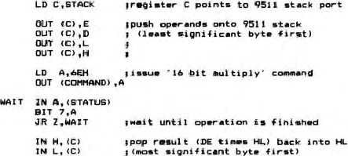

Nascom Newsletter |
Volume 3 · Number 4 · December 1983 |
| Page 28 of 37 |
|---|

All very straight forward and simple to use.
The manual supplied is rather sparse. It tells you how to set up the board and the principles behind how you get it to work but it leaves you to the 9511 data book to give you a description of the different commands available and how to use then. It doesn’t seen quite the right way about doing things but it does give you all the facts that you need to make the board work and stare to earn some of it’s worth.
The machine code programmer should find this board very easy to get along with and easy to use. For those of you who would want to use it in an applications type environment, Hisoft HP5 in CP/M format is supplied (but not with my review board because a) the Pascal was not availbale and b) I haven’t got access to CP/M.
Using the processor from a high-level language will either require patching in the required routines or tansferring everything to machine code calls (USR). If the board is successful, I would imagine that patches for most commonly used high-level languages will be published. If, however, you need to use USRs, the speed gain by the processor will probably be lost in setting up the entry point and parameters.
In conclusion then, the HSA-88B board is a nice complement to the Nascom computer. A system comprising of a graphics card (AVC or other) plus the processor board should be capable of some quite impressive feats. It is a rather expensive board but if you want the arithmetic capability of the 9511, you are unlikely to get it much cheaper. Programming the processor is very straight forward and most people should find it easy to get to grips with. It does allow parallel processing to an extent (the HSA-88B can be calculating while the Nascom Z80 is drawing) but the addition of an interrupt facility would be very welcome. I think that on the whole, this is the only point missing from a very nice product.
| Page 28 of 37 |
|---|